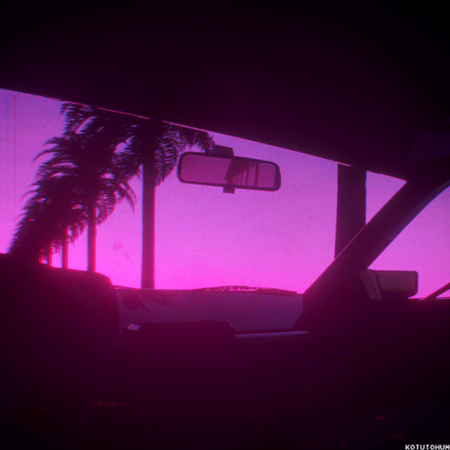
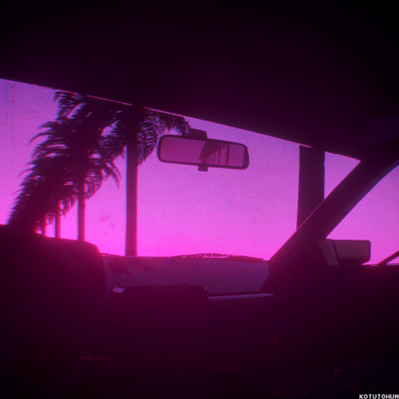

What is retrowave?
Retrowave. Retrowave (also called outrun, synthwave, or futuresynth) is a genre of electronic music influenced by 1980s film soundtracks and video games. The genre developed from various niche communities on the Internet during the mid 2000s, reaching wider popularity in the early 2010s. Maybe the 80s were just a dream... or maybe they never went away. 80s lovers who feel yourselves a little bit out of place, this genre is for you. Here are some of the best Retrowave productions. Let your trip begin in the magic night of the endless 80s.